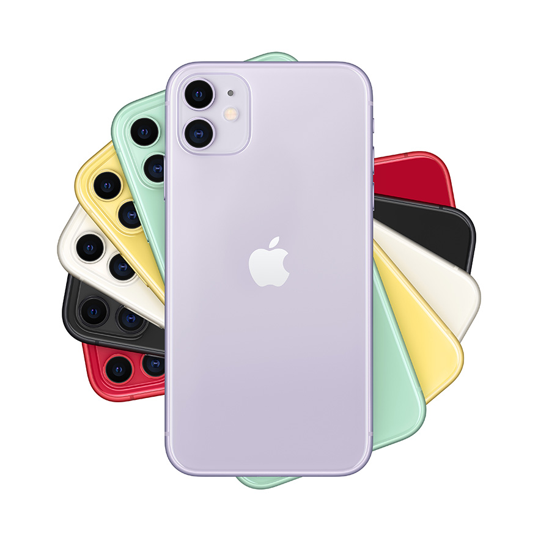

日本での始まり
日本が世界標準のスマートフォンに参入した2004年では、日本独自の変化を遂げた 「ガラケー」で十分だったので、始めは普及しなかった。
日本でスマートフォンが普及したのは、2008年にソフトバンクを通じてiPhone が発売された時です。
移行が顕著になったのは、2011年にNTTドコモが日本独自の機能を備えた スマートフォンをリリースしてからだ。
日本が世界標準のスマートフォンに参入した2004年では、日本独自の変化を遂げた 「ガラケー」で十分だったので、始めは普及しなかった。
日本でスマートフォンが普及したのは、2008年にソフトバンクを通じてiPhone が発売された時です。
移行が顕著になったのは、2011年にNTTドコモが日本独自の機能を備えた スマートフォンをリリースしてからだ。